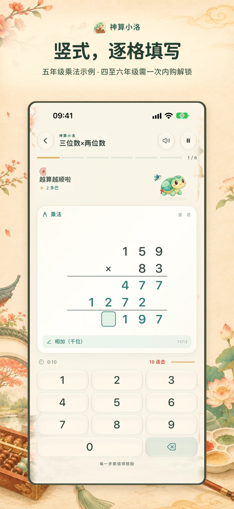
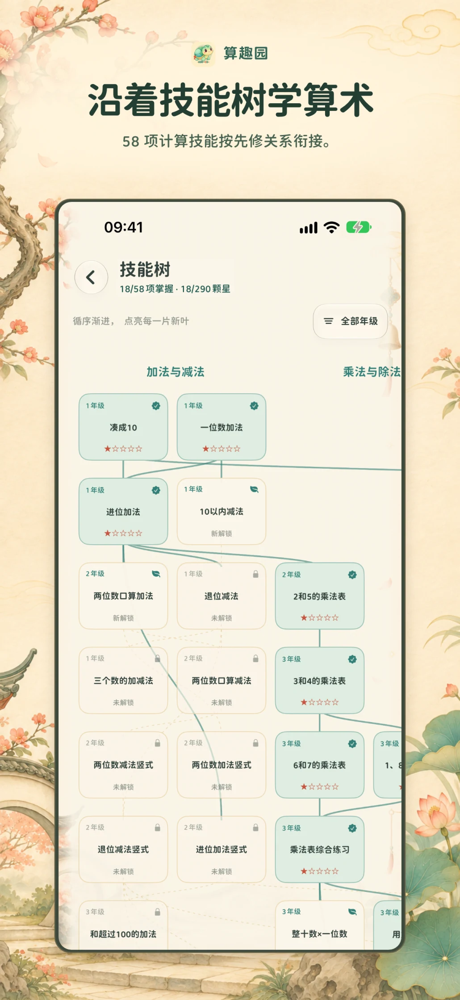
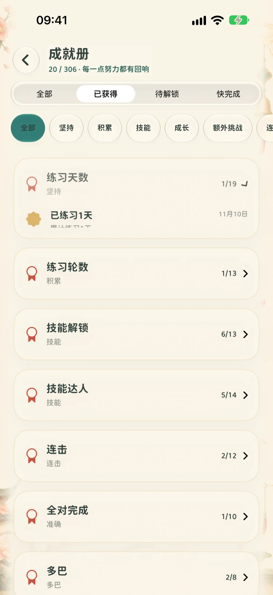
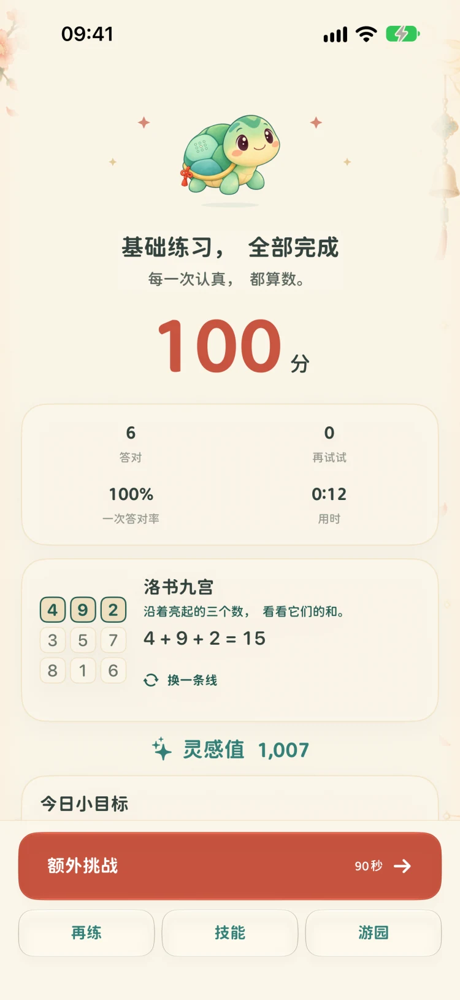

按位写竖式
做加减法时，从个位开始，观察进位与退位。填错一格可以重试，已经写对的数字会保留。
159 × 83
先乘个位的 3，再乘十位的 8，最后把两行部分积按位相加。题纸始终标出当前要填的格子。


找到下一个知识点
技能树用连线标出先修关系。看看已经掌握的节点，或点开下一项，了解要先练什么。


跟小洛发现 15
小洛取意于传统洛书灵龟意象。一轮结束后，点按「换一条线」，看看洛书九宫里每行、每列和每条对角线上的三个数怎样加成 15。

看看回合结算与成就册


按练习、技巧、速度等目标查看已获得的成就。


回看本轮的得分、用时和学习进展。
连击时的园林音画
连续答对会让配乐更丰富，花瓣随输入出现。你可以在百宝阁预览纸鸢、锦鲤、春燕和花灯，完成对应成就后选用喜欢的装扮。
小洛的角色造型、园中配景和练习反馈由神算小洛原创设计。声音、触感和动画强度可在设置中分别调整。
合上、展开，接着算。
iPhone Duo 折叠时，右侧栏放着暂停、进度和当前步骤提示。展开后，题纸与键盘重新排布，填好的数字仍在原位。


从适合的年级开始
58 项算术技能按知识的先后关系编排。年级供选择起点时参考，各地教材的教学顺序可能不同。
- 一至三年级
- 免费 · 28 项基础练习
- 四至六年级
- US$2.99 · 一次解锁 30 项进阶练习
在首页点按「4–6 年级课程包」。完成家长确认并点按「进入家长专区」后，即可查看当地价格、一次性购买或恢复购买。
购买或恢复成功后，首页会显示「完整版」，一至六年级均可练习。
购买与恢复帮助